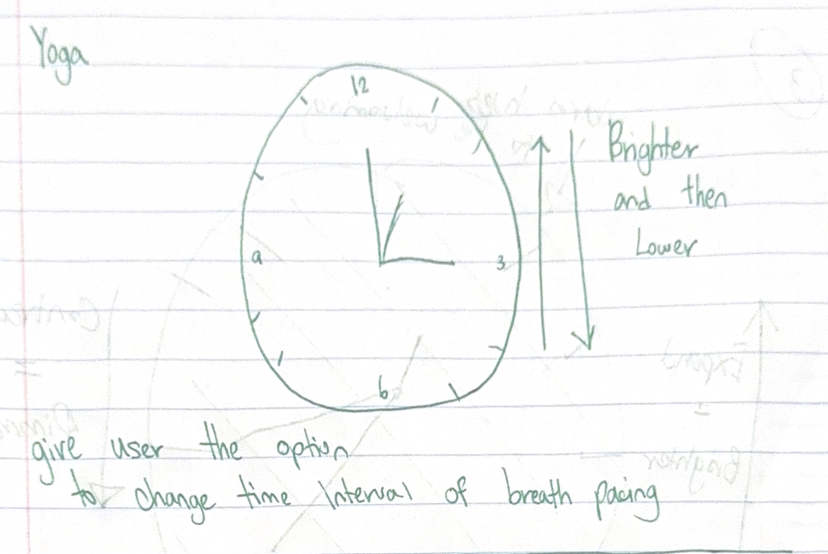
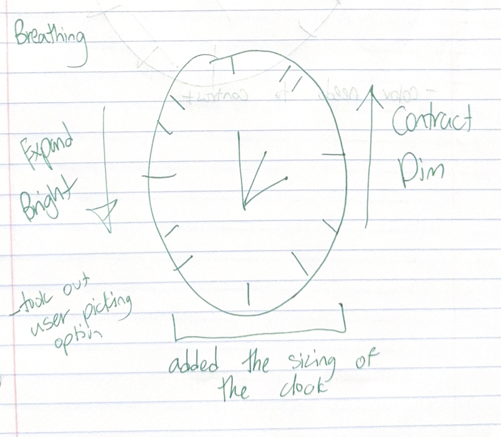
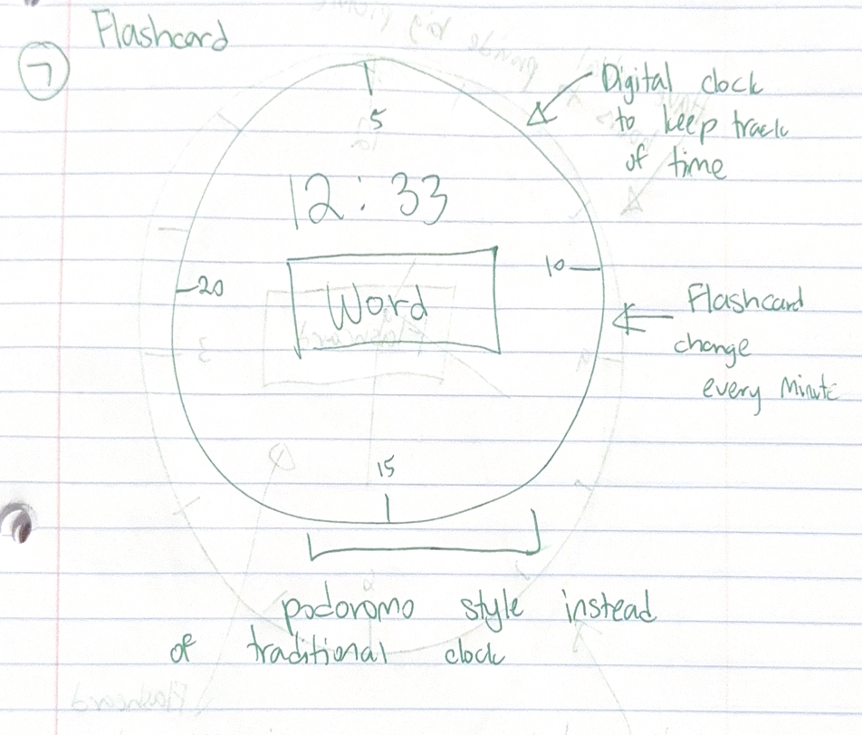
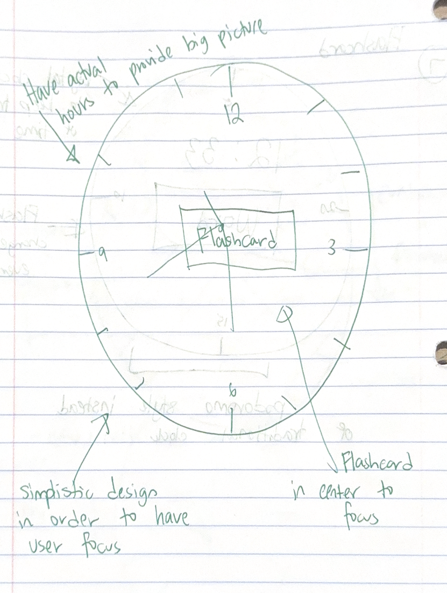
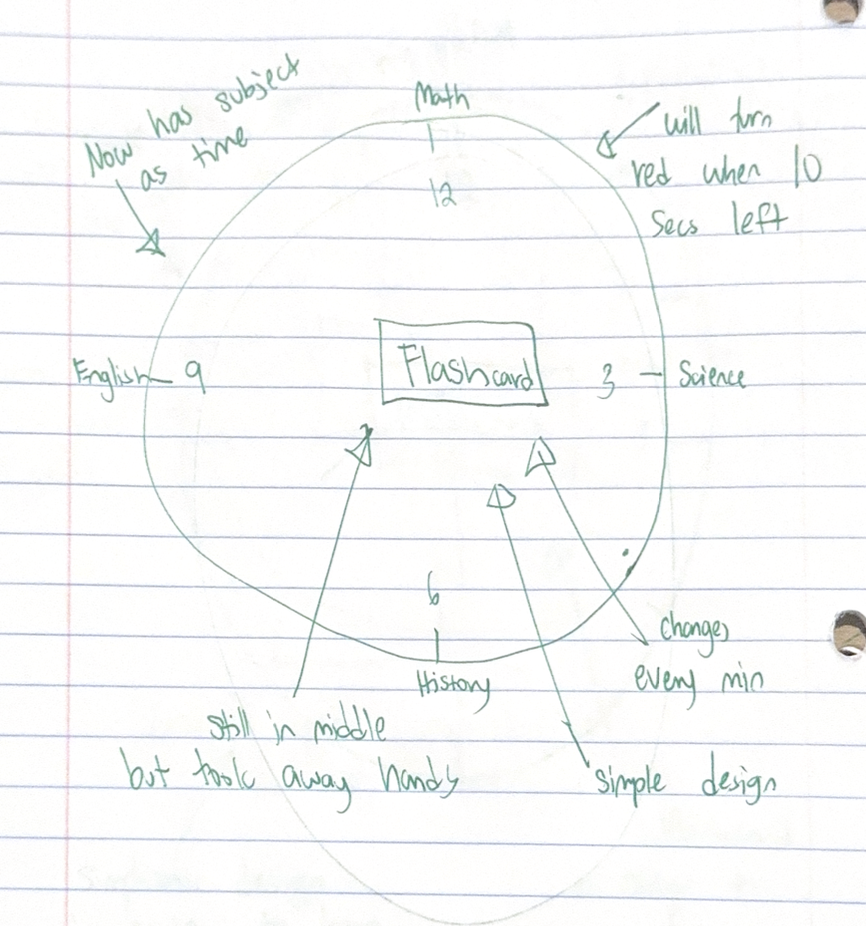
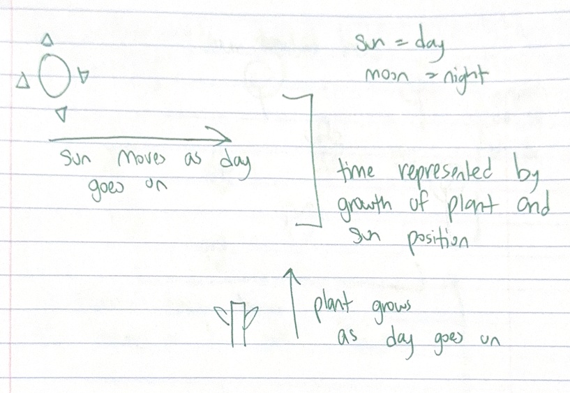
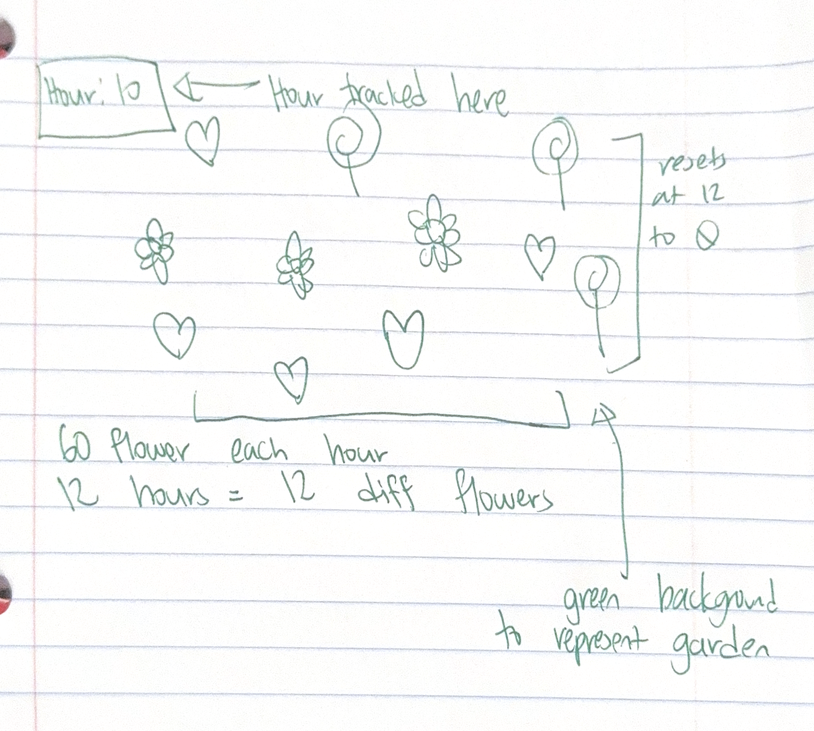

Pulse of Time
This sketch visualizes mindful inhaling and exhaling, similar to the practice of yoga. It represents the natural rise and fall that occurs as a person breathes in and out.
- Context: This is for people who want to be more mindful of their breathing. It will be used during breathing exercises or moments of meditation by individuals who want to slow down, focus, and connect with their breath.)
- Design decisions: I designed the clock with a warm tone to make it feel welcoming, while using a darker background to create contrast. The clock expands and becomes brighter to represent the inhale of a breath, giving users a visual cue that reflects the rise of breathing. It then dims and contracts to represent the exhale, mirroring the natural fall of a breath. The cycle is set to 10-second intervals, following the standard breathing rhythm often used in yoga.
- Future work: One improvement would be adding an option for users to set their own breathing intervals, so instead of being fixed at 10 seconds, they could adjust it to fit their personal rhythm—for example, 6-second cycles.
Sketch evolution
Replace these images with your own sketch evolution images.



StudyCycle
Context:This sketch supports mindful studying by helping users focus on one subject per hour. Within each hour, flashcards cycle every minute to encourage steady learning, and when only 10 seconds remain, the clock turns red to signal the upcoming card.
- Context: This is for people who want a structured and mindful way to study. It will be used in a study or work setting to help users stay focused, manage their time, and make steady progress through different subjects.)
- Design decisions: I chose a minimal color scheme so that the focus stays on studying and the content of the flashcards, rather than being distracted by bright or complex visuals. I also designed the layout so each flashcard is clearly visible and easy to read, with the clock positioned nearby to provide a subtle time cue. The interaction is simple: each card appears for a set time, and the clock turns red with 10 seconds left to signal the upcoming card, helping users stay on track without overwhelming them.
- Future work: One improvement would be to allow users to customize the subjects for each hour to match their personal study plan. Another enhancement could be a progress tracker that visually shows how many flashcards or subjects have been completed, helping users see their steady progress over time.
Sketch evolution
Replace these images with your own sketch evolution images.



Daily Bloom
This sketch helps users practice mindfulness by visualizing time as gradual growth. A new flower appears each minute, and a different type of flower appears each hour, allowing users to see small moments accumulate into a vibrant garden over the day.
- Context: This is for people who want to practice mindfulness and appreciate the small, simple moments in their day. It can be used in a quiet space at home, in a study area, or on a desktop to provide a gentle, visual reminder of time passing and growth throughout the day
- Design decisions: I chose a green background to represent grass and create a natural, calming environment. Each hour, a different flower color appears to indicate the passage of time, and a new flower is added every minute to show gradual growth. The petals of each flower are randomly generated to add variation and visual interest. These choices were made to keep the design engaging while remaining accessible and suitable for a desktop or tablet display.
- Future work: One improvement would be to allow users to customize the type of flower that appears each hour, so the garden reflects their personal preferences or favorite blooms.
Sketch evolution
Replace these images with your own sketch evolution images.


